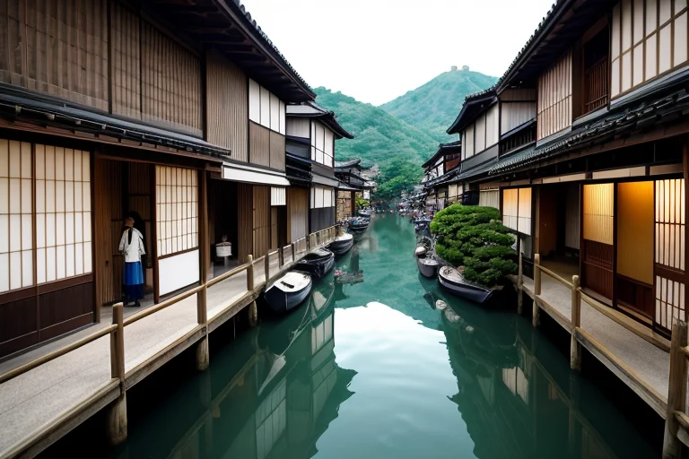

第一章 現実の滋賀
あなたはまだ気づいていない。この土地にも、王がいることを。
近江八幡の水郷地帯、掘割に沿った白壁の町家が朝日に染まる。観光客のざわめきがまだ訪れぬ早朝、ここは静かな水の記憶に満ちている。やがて日が高くなると、通りは活気に満ちる。土産物屋の店先には信楽焼の狸が並び、甘い和菓子の香りが漂う。人々は笑い、買い物をし、写真を撮る。ここは「近江商人の里」として知られ、物と金が淀みなく流れる場所だ。しかし、その賑わいの底流には、常に何かが沈殿しようとしている。喜びも、焦りも、少しの虚しさも、琵琶湖から吹き上げる風に乗ってこの町に流れ込み、掘割の静かな水面の下に、目に見えぬ感情の澱として積もっていく。湖国の商いは、人の心の動きそのものを商品として扱ってきた。そのすべてが、この土地の記憶となる。
第二章 歪みの兆候
近江八幡の掘割に、一筋の油膜が浮かんでいた。観光客の目には映らない、ごく微かな虹色。湖王オウミリア・メモリアは、水辺に佇み、その膜を見つめた。それは単なる汚れではない。この町を流れる「欲望」の濃度が、ほんのわずかに偏り、淀み始めた証だった。
商いの街は、今日も活気に満ちている。しかし、王の目には、その流れの中のほつれが見える。店主の笑顔の裏にある焦燥、買い手の目にちらつく過剰な期待。近江商人の「三方よし」の精神は、売り手よし、買い手よし、世間よしの調和を説く。だが、そのバランスが、目に見えぬ歪みによって脅かされ始めていた。記憶は本来、湖のように流れ、やがて浄化されるべきものだ。しかし、ここに集まる人々の強い想い――成功への渇望、過去への未練、未来への不安――それらが澱のように留まり、水脈を滞らせようとしている。
妖精メモリアルがそっと囁いた。「主よ、沈殿が早まっています」
王は頷き、静かな湖面のような瞳を細めた。歪みはまだ微細だ。だが、放置すれば、この地の豊かな流れそのものを蝕んでいく。
第三章 王の葛藤
近江八幡の水郷を、荷を積んだ小船が行き交う。商人たちの活気は、かつてこの地を潤した近江商人の精神を今に伝えていた。しかし王は、その喧噪の底に、澱のように沈む「留まりたい」という欲望を感じ取る。成功をこの地に刻み付けたい、富を永遠にこの手に留めたい。それは自然な願いでありながら、湖の水が流れを止めれば澱むように、過ぎたる執着は歪みを生む。
「主よ、浄化を」ビワリアが促す。王はためらった。人間の強い想いそのものを、流れ去るべき「澱」と断じていいのか。彼らが懸命に築こうとするもの、留めようとする記憶を、湖の摂理と称して洗い流す権利が自分にあるのか。感情という名の郷愁が、王の内側で渦を巻く。彼は本来、無感情な調整者であるはずだった。
だが、琵琶湖の水面が月明かりで銀色に輝くのを見て、彼は悟った。湖は留まらず、しかし湖である。流れこそが、この豊かさを保つ。彼は微かに手を動かした。歪みを調整するのは、人々の想いを否定することではない。流れ滞る澱を、ほんの少し、優しく揺り動かすことだ。
第四章 妖精との対話
近江八幡の水郷を、メモリアルは優しい眼差しで見下ろしていた。運河には観光船が行き交い、白壁の土蔵が昔ながらの商いの記憶を留めている。
「商人たちは、『三方よし』と言いました」
メモリアルが囁く声は、水のせせらぎのようだった。
「売り手よし、買い手よし、世間よし。これは、流れを尊ぶ考え方です。金も、物も、そして縁も、淀ませてはならない。でも……」
彼女は掌を上げ、水面に浮かぶ一枚の紅葉をそっと招いた。葉はくるりと回り、ゆっくりと流れ去る。
「流れ去るものばかりでは、何も残りません。ここに蔵が建ち、町が育ったのは、流れてきたものを、一度ここで留め、形にしたから。商いの本質は、流れと留めの間にあるのです」
オウミリアは黙って聞いていた。比叡山の仏教文化も、近江商人の精神も、この湖国が生んだ「留める知恵」だった。彼が調整すべき歪みは、活気ある流れが生む欲望の澱、そして過去に縛られすぎる記憶の腐敗。その狭間で、妖精は絶えず沈殿する感情を、そっとかき混ぜ続けていた。
「全てを流すのでも、全てを留めるのでもない」
メモリアルは紅葉が運河の角でゆらりと止まるのを見つめながら、言った。
「ちょうど良い間合いを、王さまはお探しなのでしょう」
第五章 微調整と余韻
近江八幡の水運を利用したレストランの厨房では、老舗の味を守る板前が、今日も近江牛を切っていた。彼の包丁さばきは、祖父から父、父から彼へと「留められて」きた記憶そのものだ。その時、彼の手がわずかに滑った。切れ味の鈍った包丁が、指先へと落ちていく。次の瞬間、厨房の扉が勢いよく開き、配達員が「失礼します！」と声を上げた。板前は思わず顔を上げ、身体がわずかに右へずれた。包丁は彼の足元のまな板へ、無害に落ちた。配達員は何も気づかず、伝票を渡して去っていく。ほんの数センチ、一呼吸の調整。それは、彦根城天守から湖面を眺めるオウミリア・メモリアが、そっと手のひらを傾けた結果だった。
彼は今、記憶が流れすぎる危うさと、留まりすぎる重さの、絶え間ない均衡を取っている。比叡山の鐘の音も、竹生島の宝厳寺の鰐口の音も、かつては全てを湖に流し、浄化する祈りだった。しかし今、この商都の活気は、時に欲望という澱を沈殿させる。彼と妖精たちは、その澱が腐敗して歪みとならぬよう、人々の些細な偶然を紡ぎ、悲劇が萌芽する寸前でそっと軌道を外す。誰にも気づかれない調整。それが、この国を守る王の、唯一の仕事である。
記憶は流れるか、留まるか。答えは、その狭間の波紋のうちにある。全てを流せば歴史は消え、全てを留めれば未来は腐る。湖は、流れ込み、沈殿し、また澄む。彼はただ、その循環が止まらぬよう、見えない手を添え続ける。
あなたの町にも、王がいる。